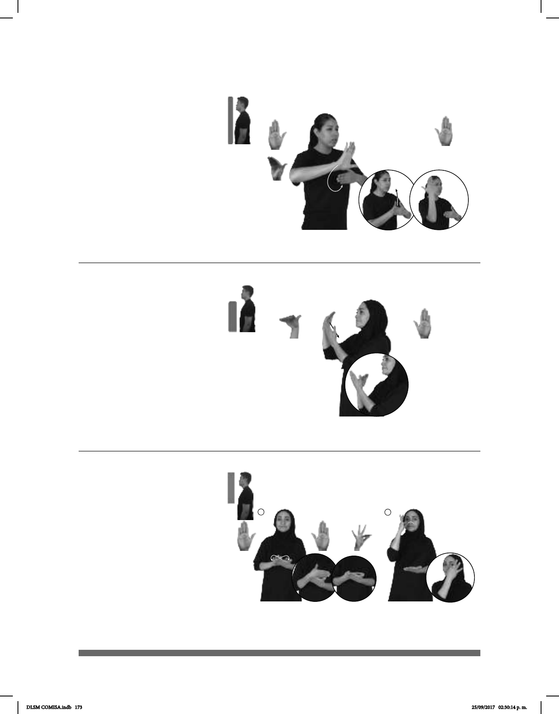

173
Seña: SB
MD seña que pasa
de B-P.2 a B-P.8, MB B-P.2
MD inicia delante de MB
y termina detrás de MB a la altura del
rostro. MB a la altura del pecho.
MD la palma inicia
hacia afuera y termina hacia adentro.
MB palma hacia adentro.
La muñeca de MD gira
y cambia la orientación de la palma,
después MD recto hacia arriba.
sust. f. Amanecer.
Espacio de tiempo que abarca desde
la media noche hasta el alba.
(B-P 187)
MADRUGADA EXPLOSIÓN pro-YO ESCUCHAR
En la madrugada escuché una explosión.
Menos (B-P 188)
COMIDA MENOS pro-YO QUERER
Yo quiero menos comida.
Seña: SB
MD B-P.11, MB
B-P.2
MD palma hacia
abajo, MB palma hacia adentro.
A la altura del pecho.
MD detrás de MB.
MD recto hacia
adentro.
Adv. Indica disminución,
restricción, inferioridad, falta de
algo en comparación con otra cosa
o con otro estado o momento de eso
mismo.
(B-P 189)
Seña: SC: I. SB; II. SM
I. MD y MB B-P.2; II.
F.15
I. MD la palma inicia
hacia abajo y termina hacia arriba. MB
palma hacia arriba; II. Palma hacia
adentro.
I. A la altura del pecho, MB
sobre MD; II. Sobre la cara, de la
mejilla derecha a la izquierda pasando
por la nariz.
I. El antebrazo de MD
gira y cambia la orientación de la palma
repetidamente; II. La mano simula
varios saltos.
1. sust. f. Dulce de
conserva hecho con una fruta pequeña
de color rojo y forma de corazón cocida
con miel o azúcar.
AYER PAN MERMELADA DE FRESA pro-YO COMER
Ayer comí pan con mermelada de fresa.
DLSM COMISA.indb 173 25/09/2017 02:30:14 p. m.